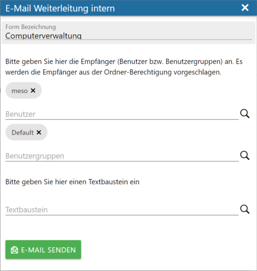
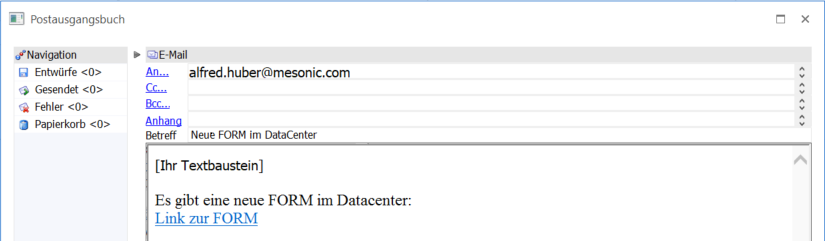
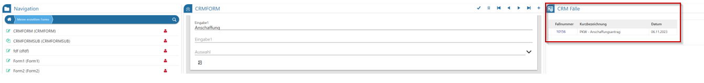

Ø Speichern
Die aktuellen Erfassungen zum geladenen FORM-Formular werden gespeichert.
Ø Ende
Der Menüpunkt wird geschlossen.
Ø Löschen
Dieser Button ist nur dann aktiv, wenn mittels VCR-Button ein bereits vorhandener Datensatz geladen wird und innerhalb des gewählten FORM-Formulars die Option "löschen Erlauben" aktiviert ist. (im FORM-Designer)
Ø Neuer Ordner
Mithilfe dieses Buttons kann ein neuer Ordner im DataCenter angelegt werden. Die Ordnerstruktur dient zur Freigabe von FORM-Formularen für bestimmte Benutzer und Benutzergruppen.
Ø FORM Designer
Mit dieser Funktion gelangt man mit dem aktuell gewählten FORM-Formular direkt in die Bearbeitung des FORM-Designers. Die gewählte FORM ist dann direkt im FORM-Designer geladen, sofern der Benutzer eine notwendige Berechtigung aufweist. (Voll-Administrator bzw. Vorlagenadministrator)
Ø E-Mail Weiterleitung intern
Bei Anwahl dieses Buttons wird ein neues zusätzliches Fenster zur Angabe von Benutzer / Benutzergruppen und einem optionalen Textbaustein geöffnet.

Nach erfolgreicher Eintragung von Benutzer / Benutzergruppen und einem Textbaustein wird mittels Anwahl der grünen Buttons "E-Mail senden" das Postausgangsbuch mit bei den angegebenen Benutzern (bzw. der Benutzergruppe) eingetragenen Mailadresse als Empfänger und dem Inhalt des angegebenen Textbausteins geöffnet.

Hinter dem Hyperlink des Textes "Link zur FORM" versteckt sich die URL für die WinLine mobile mit einem Parameter, dass die ausgewählt FORM nach dem Login innerhalb der WinLine mobile direkt für Erfassungen aufgerufen wird. Für diese Funktion ist ein WinLine Benutzer erforderlich.
Die Voraussetzung dafür ist die Bereitstellung in der MesoCloud. Weiterhin muss es eine FORM-Liste geben, in welcher die weiter unten im Fenster aufgeführten notwendigen Informationen enthalten sind. Das sind der Empfänger (z.B. Personenkonto), der FORM Schlüssel, die html-Vorlage (ein im html-Editor angelegte Vorlage, welche einen MesoCloud-Link enthält, der auf die publizierte FORM verweist).
Ø Datenquelle auf Öffentlich umstellen
Dieser Button ist nur aktiv geschalten, wenn der aktuelle Benutzer der Ersteller des geladenen FORM-Formulars ist bzw. die Berechtigung "DSGVO / UKP / WL SMART" aufweist. Mit Anwahl wird die Datenquelle zur aktuellen FORM auf "Öffentlich" gestellt, die Berechtigung zum Ausfüllen dieses FORM-Formulars wird aber nicht verändert. Lediglich die Datenquelle selbst kann anschließend in der Datenquelleverwaltung verwendet werden.
Somit ist es möglich, dass ein Benutzer, welcher zwar keine Berechtigung auf das FORM-Formular im FORM-Designer hat bzw. eventuell auch selbst keine Erfassungen im DataCenter zu diesem FORM-Formular erfassen darf, eine Auswertung über den Inhalt der bereits erfassten Datensätze erstellen.
Ø CRM Fälle anzeigen
Bei Aktivierung des Buttons werden vorhandene CRM Fälle auf der rechten Bildschirmseite dargestellt. Über den Link zur Fallnummer kann direkt in den Fall verzweigt werden.

Ø View360
Mit Hilfe des Buttons "View 360" wird der FORM-Datensatz als Ausgangsobjekt gesetzt und alles zugehörigen Objekte angezeigt
Ø Navigation VCR
Mithilfe der VCR-Buttons können entweder bereits vorhandene Erfassungen des gewählten FORM-Formulars aufgerufen bzw. mittels + Symbol ein neuer Datensatz erfasst werden.